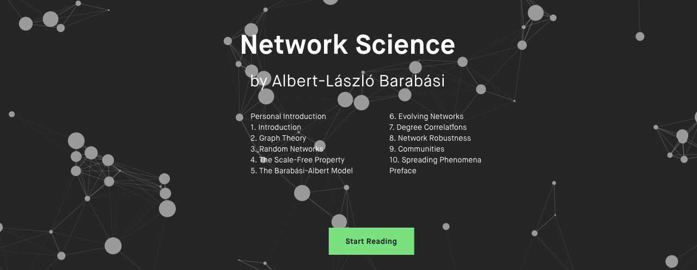
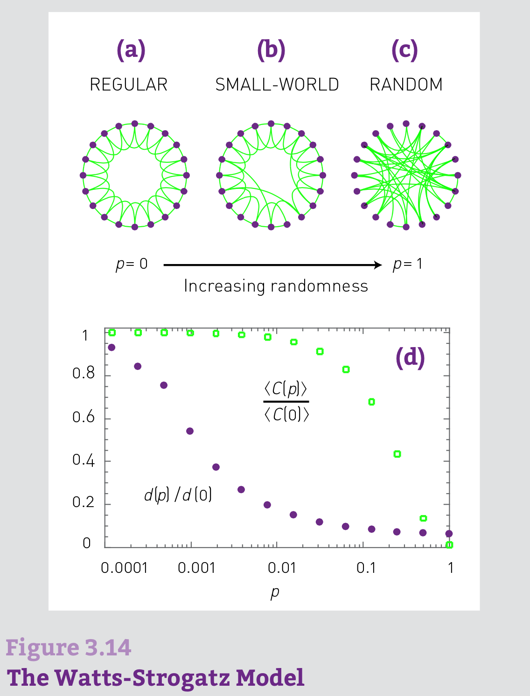
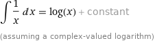

网络科学模型
Contents
网络科学模型#

The power of network science, the beauty of network visualization. Network Science, a textbook for network science, is freely available under the Creative Commons license. http://networksciencebook.com/

The random network model#
随机网络模型
Erdös-Rényi model (1960)#
Definition: A random graph is a graph of N nodes where each pair of nodes is connected by probability p.
G(N, L) Model#
N lableled nodes are connected with L randomly placed links. Erdös-Rényi(1959)
G(N, p) Model#
Each pair of N labeled nodes is connected with probability p. Gilbert (1959)
To construct a random network:#
Start with \(N\) isolated nodes.
Select a node pair and generate a random number between 0 and 1. If the number exceeds \(p\), connect the selected node pair with a link, otherwise leave them disconnected.
Repeat step (2) for each of the \(\frac{N(N-1)}{2}\) node pairs.
The probability that a random network has exactly \(L\) links and \(N\) nodes:
BINOMIAL DISTRIBUTION: MEAN AND VARIANCE#
二项分布即重复n次独立的**伯努利试验*
If we toss a fair coin N times, tails and heads occur with the same probability p = 1/2. The binomial distribution provides the probability \(p_x\) that we obtain exactly x heads in a sequence of N throws. In general, the binomial distribution describes the number of successes in N independent experiments with two possible outcomes, in which the probability of one outcome is p, and of the other is 1-p.
The mean of the distribution (first moment) is
\(P_L\)is a binomial distribution, the expected number of links in a random graph is
The average degree of a random network is :
In summary#
the number of links in a random network varies between realizations.
Its expected value is determined by N and p.
If we increase p a random network becomes denser:
The average number of links increase linearly from
= 0 to Lmax and the average degree of a node increases from
= 0 to = N-1.
Degree Distribution#
In a given realization of a random network some nodes gain numerous links, while others acquire only a few or no links. These differences are captured by the degree distribution, \(p_k\).
\(p_k\) is the probability that a randomly chosen node has degree \(k\).
In a random network the probability that node i has exactly \(k\) links is the product of three terms:
\(k_{max} = N-1\), 节点i的边的最大数量是N-1
The probability of node i having k links, or \(p^k\).
The probability that the remaining (N-1-k) links are missing, or \((1-p)^{N-1-k}\)
The number of ways we can select \(k\) links from \(N- 1\) potential links a node can have, or \(C_{N-1}^k\)
Consequently the degree distribution of a random network is:
\(p_k = C_{N-1}^k p^k (1-p)^{N-1-k}\)
which follows the binomial distribution. The shape of this distribution depends on the system size \(N\) and the probability \(p\).
POISSON DISTRIBUTION#
Most real networks are sparse, meaning that for them \(<k>\) ≪ N.
the degree distribution is well approximated by the Poisson distribution
\(p_k = e^{-<k>} \frac{<k>^k}{k!}\)
大于平均度的节点数量随着度的增加指数下降

The evolution of random networks The relative size of the giant component in function of the average degree \(<k>\) in the Erdős-Rényi model. The figure illustrates the phase tranisition at \(<k> = 1\), responsible for the emergence of a giant component with nonzero \(N_G\). REAL NETWORKS ARE SUPERCRITICAL
The small world phenomenon 小世界现象#
also known as six degrees of separation, has long fascinated the general public. It states that if you choose any two individuals anywhere on Earth, you will find a path of at most six acquaintances between them.
What does short (or small) mean, i.e. short compared to what?
How do we explain the existence of these short distances?
Consider a random network with average degree \(<k>\).
A node i in this network has on average:
\(<k>\) nodes at distance one (d=1).
\(<k>^2\) nodes at distance two (d=2).
\(<k>^3\) nodes at distance three (d =3).
…
\(<k>^d\) nodes at distance d.

从For循环的角度理解
从这个节点i走一步，到达他/她的\(<k>\)个朋友
从节点i走两步，先到他/她的\(<k>\)个朋友，再到每个朋友的\(<k>\)个朋友。
。。。
for \(<k> ≈ 1,000\), which is the estimated number of acquaintences an individual has, we expect \(10^6\) individuals at distance two and about a billion, i.e. almost the whole earth’s population, at distance three from us.
从一个开始的节点出发走d步，共有节点数量：
\(N(d) = 1 + <k> + <k>^2 + <k>^3 + ...+ <k>^d = \frac{<k>^{d+1}-1}{<k>-1}\)
随机网络的直径#
The expected number of nodes up to distance d from our starting node is \(N(d)\)
\(N(d)\)比N小，当\(d = d_{max}\)的时候： \(N(d_{max}) \sim N\)
我们知道： \(N(d) = 1 + <k> + <k>^2 + <k>^3 + ...+ <k>^d = \frac{<k>^{d+1}-1}{<k>-1}\)
若\(<k>\) 远大于1，那么: \(N(d_{max}) = <k>^{d_{max}} \sim N \)，
因此，\(d_{max} = \frac{ln N}{ln <k>}\) The diameter depends logarithmically on the system size.
The diameter depends logarithmically on the system size.
The \(\frac{1}{ln <k>}\) term implies that the denser the network, the smaller is the distance between the nodes.
Let us illustrate the implications of (3.19) for social networks. Using \(N ≈ 7 ×10^9\) and \(<k> ≈ 10^3\), we obtain
I. de Sola Pool and M. Kochen. Contacts and Influence. Social Networks, 1: 5-51, 1978.
SIX DEGREES: EXPERIMENTAL CONFIRMATION#
The first empirical study of the small world phenomena took place in 1967
Stanley Milgram, building on the work of Pool and Kochen, designed an experiment to measure the distances in social networks.
Milgram chose a stock broker in Boston and a divinity student in Sharon, Massachusetts as targets.
He then randomly selected residents of Wichita and Omaha, sending them a letter containing a short summary of the study’s purpose, a photograph, the name, address and information about the target person.
They were asked to forward the letter to a friend, relative or acquantance who is most likely to know the target person.
He found that the median number of intermediates was 5.2,
Using Facebook’s social graph of May 2011, consisting of 721 million active users and 68 billion symmetric friendship links, researchers found an average distance 4.74 between the users.
Therefore, the study detected only ‘four degrees of separation’, closer to the prediction of than to Milgram’s six degrees.
L. Backstrom, P. Boldi, M. Rosa, J. Ugander, and S. Vigna. Four degrees of separation. In ACM Web Science 2012: Conference Proceedings, pages 45−54. ACM Press, 2012.

大的聚集系数与小的网络直径如何并存？#
1D: For a one-dimensional lattice (a line of length N) the diameter and the average path length scale linearly with \(N: dmax\sim<d> \sim N\).
2D: For a square lattice \(dmax \sim <d> \sim N^{1/2}\).
3D: For a cubic lattice \(dmax \sim <d> \sim N^{1/3}\).
dD: In general, for a d-dimensional lattice \(dmax \sim <d> \sim N^{1/d}\).
In lattices the path lengths are significantly longer than in a random network.

邻居彼此认识吗？#
Local clustering coefficient
We need to estimate the expected number of links \(L_i\) between the node’s \(k_i\) neighbors.
In a random network the probability that two of i’s neighbors link to each other is \(p\).
As there are \(\frac{k_i(k_i - 1)}{2}\) possible links between the \(k_i\) neighbors of node i, the expected value of \(L_i\) is
局部聚集系数#
For fixed \(<k>\), the larger the network, the smaller is a node’s clustering coefficient.
The local clustering coefficient of a node is independent of the node’s degree.

WS模型 （1998）#
Small World Property In real networks the average distance between two nodes depends lithmically on N
High Clustering The average clustering coefficient of real networks is much higher than expected for a random network of similar N and L
a regular lattice has high clustering but lacks the small-world phenomenon.
and a random network has low clustering, but displays the small-world property.
Numerical simulations indicate that for a range of rewiring parameters the model’s average path length is low but the clustering coefficient is high.
D. J. Watts and S. H. Strogatz. Collective dynamics of ‘small-world’ networks. Nature, 393: 409–10, 1998.
The dependence of the average path length \(d(p)\) and clustering coefficient \(<C(p)>\) on the rewiring parameter \(p\).
Note that \(d(p)\) and \(<C(p)>\) have been normalized by \(d(0)\) and \(<C(0)>\) obtained for a regular lattice.
The rapid drop in \(d(p)\) signals the onset of the small-world phenomenon.
During this drop, \(<C(p)>\) remains high.
Hence in the range \(0.001<p<0.1\) short path lengths and high clustering co-exist in the network.
D. J. Watts and S. H. Strogatz. Collective dynamics of ‘small-world’ networks. Nature, 393: 409–10, 1998.
{kind=link}
In summary#
we find that the random network model does not capture the clustering of real networks.
Instead real networks have a much higher clustering coefficient than expected for a random network of similar N and L.
An extension of the random network model proposed by Watts and Strogatz [1998] addresses the coexistence of high
and the small world property. It fails to explain, however, why high-degree nodes have a smaller clustering coefficient than low-degree nodes.

REAL NETWORKS ARE NOT POISSON
BA模型 （1999）#
Barabasi (1999) Emergence of scaling in random networks.Science-509-12
Scaling-Free#

The Preferential Attachment Model
无标度的意义#
度分布的n阶矩被定义为：
\( <k^n> = \sum_{k_{min}}^{k_{max}}k^np_k = \int_{k_{min}}^{k_{max}}k^np_kdk \) （1）
低阶矩具有明确的统计意义：
n = 1的时候，一阶矩是\(<k^{}>\)，即平均度。
n = 2的时候，二阶矩是\(<k^2>\)，可以帮助计算方差 \( \delta^2 = <k^2> - <k^{}>^{2} \)，测量了度的离散程度（the spread in the degrees）。
n = 3的时候，三阶矩是\(<k^3>\), 决定了度分布的偏度（skewness），测量了\(p_k\)围绕着\(<k>\)的对称性。
对于无标度网络而言，满足幂律分布：
\(p(k) = Ck^{-\gamma}\) （2）
由公式（1）和（2）可以得到：
\( <k^n> = \int_{k_{min}}^{k_{max}}k^np_kdk = C \frac{k_{max}^{n- \gamma +1} - k_{min}^{n - \gamma +1}}{n - \gamma + 1} \) （3）
可以使用wolframalpha的积分计算器积分来进行简单验证，例如x^(n-r)dx从10到100积分 网页链接：http://www.wolframalpha.com/input/?i=integrate+x^(n-r)+dx+from+10+to+100
显然：
当\(n - \gamma +1 <= 0\)时，随着\(k_{max}\)增加，\(k_{max}^{n- \gamma +1} \rightarrow 0\)。所有满足\(n <= \gamma -1\)的n阶矩都是有限的。
当\(n - \gamma +1 >0 \)时，随着\(k_{max}增加，\)\(k_{max}^{n- \gamma +1} \rightarrow \infty\)。所有满足\(n > \gamma -1\)的n阶矩都是无极限的。
对于无标度网络而言，一般幂参数\(2 < \gamma < 3\)，所以：
对于n = 1的情况，即一阶矩平均度\(<k^{}>\)是有限的。
但对于n >= 2的情况，即\(k^2\)或\(k^3\)是无极限的。二阶和高阶矩无穷大是“无标度”的来源

在网络中随机抽取一个节点的度可以显著的不同于平均度\(<k>\)
上图最为直接的描绘出了这种特点，即与正态分布等相比，无标度网络下降的慢。
对于任何指数类型的分布，如泊松分布或高斯分布，随机选取一个节点的度在平均度附近，因此平均度就是这些网络的
尺度。对于一个幂律分布而言，因为二阶矩发散，在网络中随机抽取一个节点的度可以显著的不同于平均度\(<k^{}>\)， 因此平均度不再是网络的尺度，称之为无标度。
{kind=link}
对于不同的网络，平均度与标准差的取值
连续平均场”Continuum Mean-Field”#
“Mean-Field”: many -> one
The complex interaction between a large number of components can be simplified into a single averaged effect of all the other individuals on any given one.
“Continuum”: discrete -> Continuous
A discrete variables that is “smooth enough”, i.e. increase by one unit in each period, such as time steps [1], spatial jumps [2-3], and population, can be viewed as a continuous geometric structure.
Any measure on this structure, like degree [1], number of unique locations visited [2], and distance [3], can be described by differential equations.
模型设定#
初始状态有\(m_0\)个节点
增长原则：每次加入一个节点i （加入时间记为\(t_i\)）, 每个节点的加入带来m条边，2m个度的增加 其中老节点分到的度数是m，新加入的那一个节点分到的度数为m. 那么到时间t的时候，网络的总节点数是\(m_0 + t\)，网络的总度数为\(2mt\)。
优先链接原则：每一次从m条边中占有一条边的概率正比于节点的度\(k_i\) 那么显然，加入的越早（\(t_i\)越小）越容易获得更多的链接数。 从时间0开始，每一个时间步系统中的节点度\(k_i\)是不断增加的。

度的增长/时间依赖性#
\(k_i\)在一个时间步获得一个度的概率表示为\(\prod (k_i) \)， 那么有：
也就是说，在时间点t,节点i获得一个度的概率（能力）是节点i的度占网络总度数的比值。一个时间步，\(k_i\)随t的变化率可以表达为： $\(\frac{\partial k_i}{\partial t} = \Delta k \prod (k_i) = m \frac{k_i}{2mt} = \frac{k_i}{2t}\)$

https://www.wolframalpha.com/input/?i=integrate+1/(2x)+dx+
积分结果
积分结果#
此时，根据模型的初始条件，每个新加入节点获得的度是m：
\(k_i(t_i) = m \) 代入公式（1）
可以得到\(C =\frac{m}{(t_i)^{0.5}}\) 公式（2）
代入公式（1），得到：
\(k_i = m (\frac{t}{t_i})^{0.5}\) 公式（3）
对于一个节点i，其加入网络的时间\(t_i\)是固定的，我们可以观察其度\(k_i\)随着时间的幂律关系。
累积概率分布#
当我们思考一个累积概率分布的时候，我们想要的是\(k_i(t) < k\)的概率：\(P(k_i(t) < k) \)
由公式\(k_i = m (\frac{t}{t_i})^{0.5}\) 公式（3），可以知道：
\(P(k_i(t) < k) = P( m (\frac{t}{t_i})^{0.5} < k ) = P( t_i > \frac{m^2 t}{k^2} ) = 1 - P(t_i \leqslant \frac{m^2 t}{k^2} )\)（4）
在初始状态\( t = 0\), 有\(m_0\)个节点，那么\(t_{m_0} = 0\)
假设我们将节点加入的时间步是均匀的，那么\(t_i\)的概率是一个常数：
\(P(t_i) = \frac{1}{m_0 + t}\) 公式（5）
均匀分布的性质#
设连续型随机变量X的概率密度函数为 \(f(x)=1/(b-a)，a≤x≤b \), 则称随机变量X服从[a,b]上的均匀分布，记为X~U[a,b]。若[x1,x2]是[a,b]的任一子区间，则 \(P{x_1≤x≤x_2}=(x_2-x_1) \frac{1}{b-a}\)
根据均匀分布的性质，将公式（5）代入公式（4）得到：
\(P(k_i(t) < k) = 1- \frac{m^2 t}{k^2} P(t_i) = 1 - \frac{m^2 t}{k^2 (m_0 + t)} \) 公式（6）
对累积概率函数求微分，就可以到达概率密度函数:
\(P( k ) = \frac{\partial P(k_i(t) < k)}{\partial k} = \frac{2m^2 t}{m_0 + t} \frac{1}{k^3}\) 公式（7）
也就是说：\(\gamma = 3\), 与m无关。
参考文献#
Barabasi 2016 Network Science. Cambridge http://networksciencebook.com/
Barabasi (1999) Emergence of scaling in random networks.Science-509-12.pdf
Barabasi (1999) Mean-field theory for scale-free random networks. PA.pdf
Albert & Barabasi (2002) Statistical mechanics of complex networks. RMP.pdf
Principle of Locality I: Hacking the Continuum Mean-Field Technique in Network Modeling http://www.jianshu.com/p/97f674267d3e